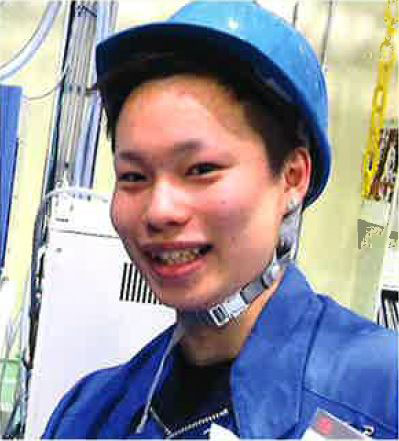

社員インタビュー
（技術職）INTERVIEW 01
- HOME
- 社員インタビュー（技術職）
社員インタビュー～技術職編～
自分に合った仕事がきっと見つかります。
弘前工場 生産技術科
青森県立黒石商業高等学校 商業科 卒
2018年入社
工場の中では、製品を製造する成形機をはじめとして、たくさんの機械が活躍しています。私の仕事はこうした機械のメンテナンスや改善、トラブル対応などで、工場が常にスムーズに稼働するために重要な役割を担っています。それに加え、工場の環境を整備したり、作業を自動で行ってくれる自動機の製作にも取り組んでいます。自働化は当社が積極的に進めているもので、作業を機械が行うことによって人の手が省け、正確さや速さも加えて生産性を向上させるのが目的です。各工程の仕組みや機械構造を理解し、確実に作業するのは難しいですが、機械のトラブルに対応したり改善を行うことで現場から感謝されると、うれしい気持ちになります。
私は商業高校出身でしたが、初心者でも電気や機械の知識を習得できる環境や、研修・指導などのサポートが当社は充実しています。今後は自動機の製作やIoT技術を習得し、さらに改善につなげていきたいです。
当社は社員がみんな明るく、向上心をもって仕事を行っており、スキルアップにつながる会社だと思います。また交友会と呼ばれる社員間の親睦活動があり、いろいろなイベントや行事があって、仕事以外でも楽しく過ごせる環境があります。
当社にはさまざまな部署があり、仕事の内容も多様です。学生時代の勉強内容にかかわらず、きっと自分にあった仕事が見つかるのではないでしょうか。
興味があった金型の設計に携わっています。
技術部 金型技術科
岩手大学工学部 機械システム工学科 卒
2017年入社
プラスチック製品を形作るための金型を設計しています。もともと大学時代の講義の一貫で金型を扱っている企業に研修に行く機会があり、そこで金型に興味がわきました。就職活動をする中で、三光化成が金型の製作を行っており非常に高い技術力を持っていることを知り、ここで金型設計をしてみたいと思い入社を決めました。
大学では材料力学の金属強度に関する勉強をしていたので、樹脂や金属の強度計算はできました。プラスチック製品の金型を製作する上で、これらの知識は活かされていると思います。実際の設計ではTOPsolidというCADソフトを用いますが、使用方法は入社後の外部研修で学び、さらに先輩方にOJTで実務を教えていただきました。自分が設計した金型の試作を行う際、思い通りの形状で製品が出てきたときにはとてもやりがいを感じることができます。
金型製作は奥が深く、製品に不良ができないようなさまざまな工夫、金型の各部品の選定方法など、必要なノウハウを覚えなければなりません。難しいこともありますが、これからも技術を積極的に習得し、いろいろな場面で活躍できるようになりたいです。
私の勤務する金型工場には最新の3Dプリンターがあり、通常の加工では不可能な形状を作成することができるといわれています。将来、こうした先端技術に関われることを楽しみにしています。
三光化成で夢を叶えてほしいです。
一関第二工場 主任
一関工業高等専門学校電気工学科 卒
2002年入社
当社は社名からは想像しにくいかもしれませんが、機械系の素養や知識が活用できる仕事がいくつもあります。私が担当しているのは生産設備や自動機のメンテナンスと改善、そしてロボット化による省人化活動の推進などです。
学生時代は電気工学を専攻したおかげで、ポンプモーターやコンプレッサーなどの生産設備を扱う上で勉強が役に立っています。業務の専門性から人に頼られることが多く、要望に応えられる仕事ができたときは非常に充実感を覚えます。それと、常に同じ仕事ではないので飽きることがないです。絶え間ない情報収集や他工場との情報共有によりいろいろな刺激を受けながら、次々と新しいことに挑戦できる環境なので、変化があり楽しいです。
反面、専門分野の知識を持つ社員が少なく、少人数で仕事を処理しなければならず、業務が立て込んでくるときはきつく感じることもあります。先輩社員や協力メーカーへ相談して乗りきるようにしていますが、共に働く仲間が増えたらいいなとも感じています。機械や電気を専攻、あるいは機械いじりが好きな方は、ぜひ当社に来ていただきたいです。
プラスチックは金属の代替として需要が増えており、未来への展望が開けています。新技術に接することも可能です。ぜひプラスチック業界で夢を叶えてください。
いっしょに勉強していきましょう。
品質保証部 品質保証課（朝霞）
埼玉県立富士見高等学校 普通科 卒
2012年入社
当社はもちろん自社内で製品を作ることができるのですが、生産の状況などによっては同業他社様（協力会社様）に一部製造をお願いする場合があります。私が担当しているのは、協力会社様から当社に納品されてきた製品の受入検査です。製品の外観チェックや寸法の測定を行い、この製品は品質に問題ありませんという証明になる検査成績書をつけてお客様へ出荷します。
入社当時はまず測定器の使い方を覚えるのに苦労しました。どこまでが不良かというレベルの見極めも難しいです。また、現場や事務などさまざまな方を密につながっている位置での仕事なので、どの業務をどのタイミングで終わらせるか、報告するかなど、その都度臨機応変に対応することが求められます。大変さもある一方で、一日の出荷作業をスムーズに終えられたときや、不良品を検出できたときは充実感があります。
私が入社した当時は年齢の近い社員がいなかったのですが、先輩社員のみなさんが親切に話しかけてくれ、とてもかわいがってもらえました（笑）。今でもその雰囲気は変わっておらず、このアットホームさが当社の魅力だと思います。
みなさんはプラスチックのことをほとんど何も知らないと思いますが、私も同じでした。でも、会社の方々に助けてもらい、こうして仕事ができています。心配はいりません。一緒に勉強していきましょう。
ぜひプラスチックに興味を持ってください。
広島工場 生産係
広島県立総合技術高等学校 環境設備科 卒
2017年入社

当社を初めて知ったきっかけは、高校の先生に勧められて参加した会社説明会です。広島に新しい工場を作るという話を聞き、興味を持ちました。
現在の仕事は成形作業に関連する業務です。成形機の立ち上げや終了作業、成形機にセットする金型の交換、できた製品を検査し箱に詰めるなどの仕事があります。日々新しく覚えることがあり楽しく、不良を発見したときなどは達成感があります。逆に、不良が出た原因を見つけ出そうと考えるのはすごく難しいです。不良品を出さないようにするためには原因究明が必要なので、毎日のように悩みながらいろんなことを学んでいます。
プラスチック製品は金属と比べて軽く、形を自由にでき、コスト面でも優れています。以前は金属製だったものがプラスチック製にどんどん置き換わってきています。とても魅力的で将来性のある素材なので、ぜひ興味を持ってほしいです。
広島工場は当社の中で一番新しく、伸び盛りの拠点です。それだけに大変なこともありますが、きっとやりがいも大きいと思います。社員同士の仲も良く明るい雰囲気で、私のような一般社員の意見も会社はちゃんと聞いてくれます。これからの広島工場を一緒に盛り立ててくれる方をぜひお待ちしています。
誰もが同じ経験をできる会社です。
多治見工場 品質管理係
岐阜大学工学部 応用科学科 卒
2016年入社
製品の外観検査、寸法測定、機能試験（強度を確かめる試験）を担当しています。製品の不良を見抜くのはクレーム防止のために非常に大切ですが、知識と経験が要求されます。特に最初は検査のポイントがわからなかったため、いちいち時間がかかりました。不良というのは、目で見てすぐわかるものばかりではないんです。ちょっとした製品表面のざらつきや、ごく微量の金型から発生する油汚れなど、すぐに判断できないものは悩んでしまい、骨が折れました。今は製品ごとの不良パターンがかなりつかめるようになり、検査の時間が短縮できてきました。これも自分の知識が増えたからかもしれないと思うと、楽しいです。今後は三次元測定機というさらに難しい機器の取り扱いにチャレンジしたいです。
学生時代は、化学の周期表に載っている各元素に関する勉強を主にしていました。プラスチックについても学んでいたため、樹脂材料の名称を覚えるのに苦労はありませんでした。しかし、それぞれの特性や用途はむしろ入社後に覚えました。学生時代の勉強はもちろん大切ですが、それをベースにしつつ就職後の実際の仕事でどれだけのことを得られるかが重要だと思います。
三光化成は「誰もが同じ経験をできる会社」です。大きな会社だと部署が違えば顔も仕事内容も知らない、ということになりがちです。当社は誰が何をやっているかお互いにしっていて、かつ協力し合って一つの製品をつくっていくので、経験が共有できるのです。これは、当社ならではの強みだと考えています。
慣れるまでが頑張りどころです。
宮城工場 品質管理係
宮城県立登米高等学校 普通科 卒
2017年入社
品質管理係に所属し、製品の寸法測定、お客様へ提出するデータや検定データの作成、企画や仕様書の作成などを主に行っています。まだまだわからないことが多く、失敗することもありますが、工場の社員のみなさんが優しく接してくれ、わからないことがあっても質問しやすい雰囲気をつくってもらっています。働きやすい環境です。
三光化成ではお客様のご要望に応じ、オーダーメイドで日々製品を開発しています。なので、新しい製品を測定することができるのは楽しいです。また、仕事に慣れて任される仕事が増えてくると、それだけやりがいを感じます。
もちろん、任される仕事が増えると責任が増し、大変なこともあります。限りある時間の中で業務をいかに効率よく進めるか、考えながら取り組むようにしています。今後はもっとさまざまな製品に触れ、測定能力を向上させていきたいです。
高校生から社会人になると環境がガラリと変わり、今までにない経験がたくさんできるようになります。私も最初は不安だらけでしたら、今はある程度しっかりやれていると思うので、慣れるまでが頑張りどころだと思います。わからなければ聞くという、当たり前の行動をしっかりと行うことが大切だと感じています。
全力で挑戦してみてください。
一関工場 品質管理係
岩手県立一関第二高等学校 総合学科 卒
2017年入社
高校生のときに参加した当社の企業説明会で紹介された製品サンプルの中に、部活動で使っていたソフトテニスラケットのブリップエンドがあるのを見て、この会社に興味がわきました。入社後は、これに限らず当社の製品が社会のさまざまな場面で役立っていることを知り、それに自分が携わっているのだと思うとやりがいを感じます。
現在の仕事は製品の外観検査、寸法測定、出荷検査です。寸法測定では工具顕微鏡、三次元測定機などの機器を使い、1000分の1ミリ単位で測定をしています。測定機の取り扱いは大変難しく、慣れるまでかなり時間がかかりました。品質判断の基準づけなど、まだまだ勉強しなければならないことが多いです。
当社は男女関係なく雰囲気がよく、働きやすいです。また、業務を行う中で「ここはもっとこうした方が良いのでは？」などと気づいた点を提案できる制度（改善提案）が設けられていて、
業務の改善に主体的に関わることができます。
私が高校時代に学んでいたのは農業科目や家庭科目で、工業系に直接結びつくものではなかったですが、知識や経験は入社後に十分身につけられます。それ以上に、学生時代はどんなことでも全力で挑戦することが大切だと思っています。失敗も含めそれが自分の糧となって、社会人となったときに活かされるはずです。工業系の方もそうでない方も、興味があればぜひ当社で働いてみませんか？
一緒に働くのを楽しみにしています。
一関第二工場 生産課
岩手県立前沢高等学校 普通科 卒
2018年入社
子供のころからプラモデルを作るのが趣味で、プラスチックに興味がありました。高校生の就職活動を通して、三光化成がプラスチック製造の高い技術を持っていることを知り、自分も携わりたいと思い入社を決めました。普通科の出身で、専門的な勉強をしていたわけではありませんが、入社後のさまざまな研修や指導によって、必要な知識を学んでいます。
今行っている業務は製品の外観検査、そして製品の梱包などです。出荷前に不良品を見抜けたとき、また、改善によって作業効率を上げることができたときには嬉しさを感じます。
今後は成形機の使い方をマスターし、国家資格である射出成形技能士の資格取得を目標に努力していきたいと考えています。
高校時代に部活や趣味を通じて得たコミュニケーション能力が、仕事を円滑に行う上で役に立っていると感じています。仕事は常に他の人間と向き合うことで進んでいくので、コミュニケーションは専門や職種を問わず大事です。
当社の社員には、仕事や悩みなど親身になって相談に乗ってくれる人が多く、とても親しみやすいと思います。将来、みなさんと一緒に働けることを、社員一同楽しみにしています。